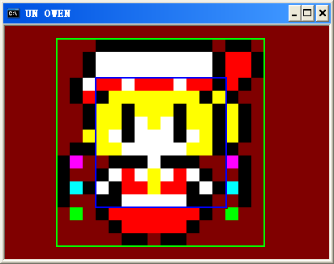
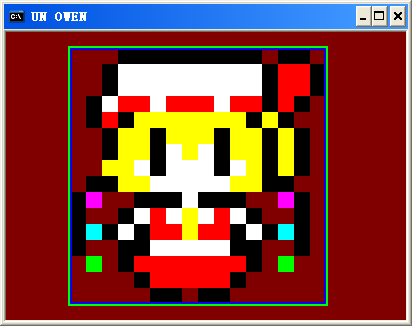

oUnit类的成员函数，oUnit的构造函数。
oUnit(bool bImageBased = false);
参数 bImageBased ——表明这个单位是否为基于图片的单位，true是，false否，默认否
——基于图片的单位会自动把自己的宽高和所绘制图片的宽高统一起来。对于基于图片的单位，如果你改变它的宽高比图片要大，那么它在绘图时会自动放大图片到与自己的宽高一样；如果你改变它的图片缩放值比如X和Y方向都放大2倍，那么它的宽高也会自动变为原来的两倍；在图片设置了旋转角度后，它的大小也会自动的作出调整。
——不基于图片的单位就还是保持单位大小，和图片大小没有任何关系
——两种类型的单位还有个不同点就是基于图片的单位在绘制时，它的图片左上角一定是和单位的左上角重合的，而不基于图片的单位会以单位为中心来放置图片，就像这样：

蓝色的框表示单位的范围，绿色是图片的范围，图片永远是以单位为中心放置的碰撞检测只检测单位的范围

基于图片的单位，图片宽高就是单位宽高，单位位置就是图片位置